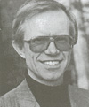

|
Born in Lancashire, Derek read music at Durham University where he first conducted choirs and orchestras. As the recipient of an International Rotary Fellowship he became a postgraduate conducting student at the University of Washington, U.S.A., subsequently completing a research degree in the conducting of twentieth century music. He has taught in grammar and comprehensive schools on Merseyside and the Isle of Wight and for thirteen years was head of music at Peter Symonds' 6th Form College in Winchester. A former chief examiner for the Oxford University music A-level, Derek spent ten years as a music tutor with the Open University. Since 1987 Derek has been Director of Music at the Hospital. of St. Cross, Winchester and he has regularly conducted performances of the Winchester Operatic Society, including an award-winning Carmen. As a composer he has provided orchestral and choral music and several arrangements for groups with which he has worked. Over many years directing public performances with both students and adults he has covered material ranging from Renaissance sacred music, through standard symphonic and concerto repertoire to Weill's Threepenny Opera and premières of works by Judith Weir and Anthony Powers. He is keen to encourage music which combines young with more mature voices such as Britten's St. Nicolas and Rutter's Mass of the Children. Derek has been associated with WCMF for 25 years, firstly as conductor of the Easton and Martyr Worthy Choral Society (now the Itchen Valley Choral Society), then as conductor of the Twyford Singers and finally as assistant Festival conductor. In 2000 he took charge of the Romsey programme of Orff's Carmina Burana and Constant Lambert's Rio Grande. He returned to the Abbey in 2001 for the Festival's 80th anniversary season conducting Haydn's Creation. More recently Derek has directed Handel's oratorio Samson and his Ode for St. Cecilia's Day together with Mendelssohn's Hymn of Praise. In 2006 he succeeded WCMF's long-standing Director of Music, Francis Wells, and presided over a 150th Anniversary Concert of Elgar's music given in Winchester Cathedral in 2007. In 2016 Derek handed over to David Burgess as Director of Music, and in 2017 became Chairman |
 |